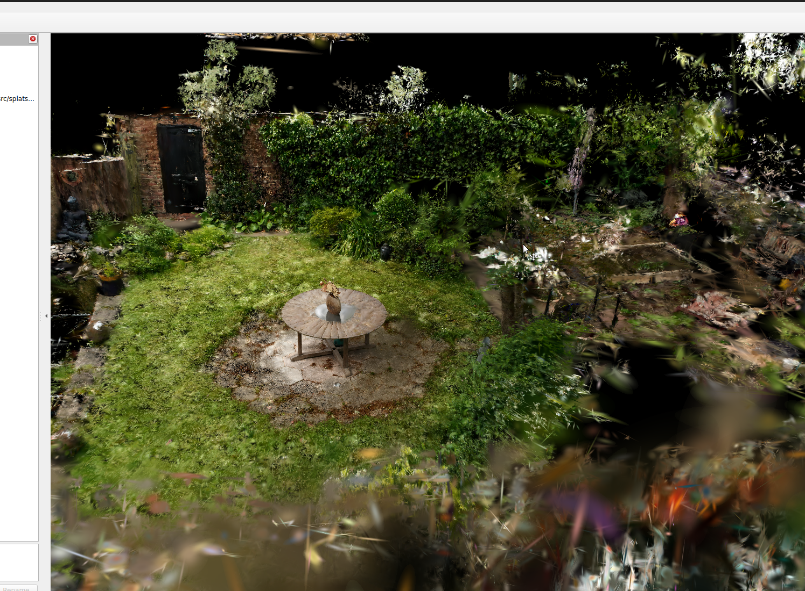
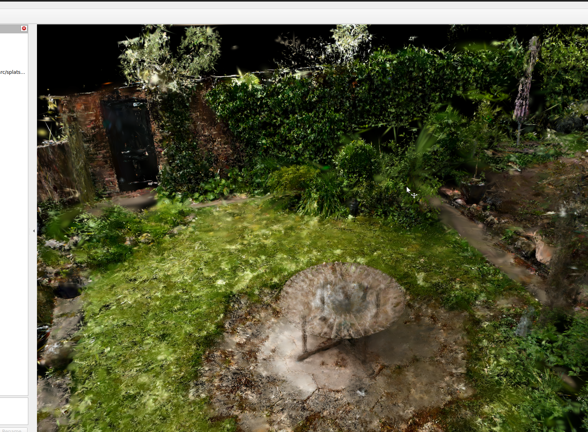
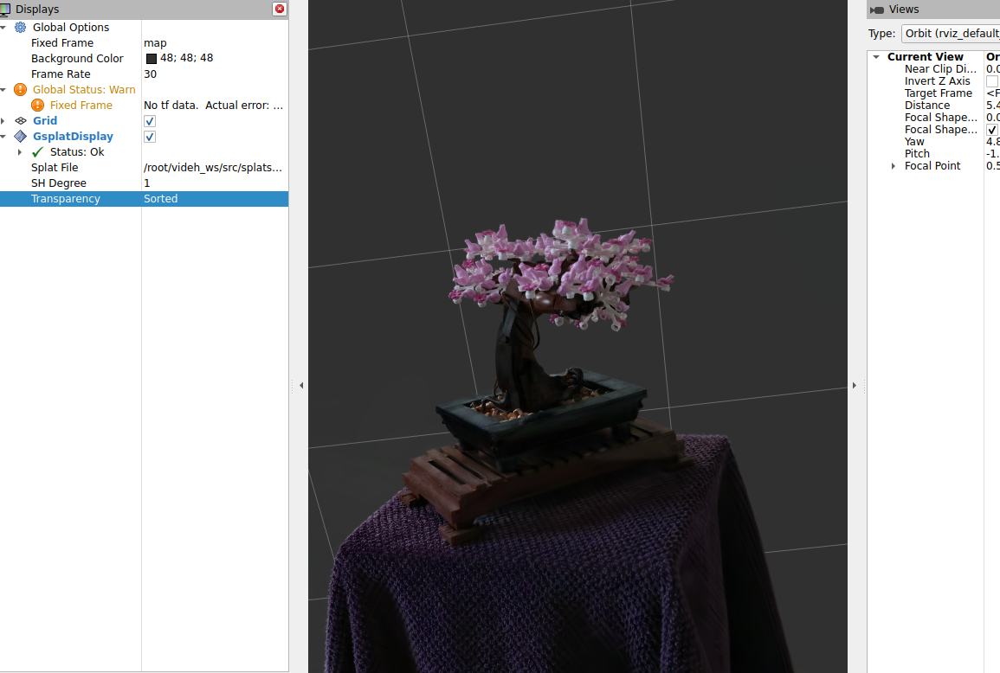
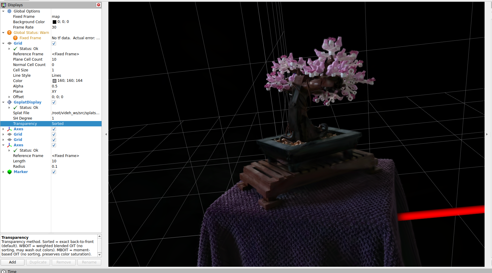

ROSCon 2026
RVizSplat: Real-time 3D Gaussian Splatting
natively inside RViz 2
1 Affiliation A
2 Affiliation B

3D Gaussian Splatting has rapidly become the dominant representation for photorealistic scene
reconstruction, but the robotics community has had no first-class way to view these
scenes inside its standard tooling. RVizSplat is a native RViz 2
Display plugin that renders millions of 3D Gaussians at interactive framerates, side-by-side
with the rest of a robot's scene graph — TFs, markers, point clouds, meshes. Splats can be
loaded from a .ply file or streamed over a ROS topic
(splat_msgs/SplatArray) so a downstream node can update a live splat scene as
easily as a marker array. Transparency is resolved in one of two parallel modes — an exact
back-to-front Sorted path with a CUDA-accelerated worker-thread sort, or a
four-pass Weighted Blended OIT path that skips the sort entirely.
A trained 3DGS scene reaches RViz either as a .ply file or as a
splat_msgs/SplatArray on a ROS topic. The plugin's SplatCloud
owns the GPU upload and instanced draw; an EWA + spherical-harmonics shader projects each
splat to a screen-space ellipse and emits a 4-vertex quad. Transparency is resolved in one
of two parallel modes:
GsplatDisplay Properties panel; the sort path runs only when
Sorted is active.
A worker thread owns the depth sorter (CPU pdqsort or CUDA CUB radix). The render thread posts a sort request per frame and reads the latest result via a lock-free pickup; no stalls, no per-frame mutex contention, no CUDA context churn. The GPU then draws splats back-to-front with standard pre-multiplied alpha blending.
Sorting splats globally against opaque RViz primitives is impractical — markers don't carry a sort key. Instead, in WBOIT mode the per-frame sort is skipped entirely and a four-pass Ogre compositor (opaque scene, weighted accumulation, transmittance product, resolve) approximates correct transparency. Splats live in render queue 95 (after opaque queue 94), so the compositor catches them automatically while the rest of RViz keeps using its native pipeline.
Captured live from the dev workspace running on Ubuntu 24.04, ROS 2 Rolling and the plugin's CPU-sort path (CUDA support disabled in this build).



GsplatDisplay property tree on
the left exposing source, SH degree, sort backend, clip box and transparency mode.

Numbers captured from the plugin's own per-frame logger during interactive use. Hardware: AMD Ryzen 9 8940HX + NVIDIA RTX 5050 Laptop, viewport 1920 × 1140. This build was compiled without CUDA support, so the Sorted path falls back to CPU pdqsort — making it the bottleneck on the larger scene. CUDA-enabled numbers will land alongside the talk.
| Scene | # Splats | Mode | Sort time | Render time | FPS |
|---|---|---|---|---|---|
| Bonsai | 100,000 | Sorted (CPU) | < 0.1 ms | 0.002–0.007 ms | ~990 |
| Garden | 5,834,784 | Sorted (CPU) | 640–2,589 ms | 0.004–0.037 ms | 13–15 |
| Garden | 5,834,784 | WBOIT | — (skipped) | 0.002–0.076 ms | 21–27 |
Standard novel-view-synthesis metrics measured against held-out reference views from the training set. Higher PSNR & SSIM is better; lower LPIPS is better.
| Scene | SH degree | Mode | PSNR ↑ | SSIM ↑ | LPIPS ↓ |
|---|---|---|---|---|---|
| Bonsai | 3 | Sorted | — | — | — |
| Bonsai | 3 | WBOIT | — | — | — |
| Garden | 3 | Sorted | — | — | — |
| Garden | 3 | WBOIT | — | — | — |
git clone --recurse-submodules https://github.com/suchetanrs/RVizSplat
cd RVizSplat
chmod +x setup_permissions.sh && ./setup_permissions.sh
docker compose build
docker compose run --rm rviz-dev
# inside the container
source /opt/ros/rolling/setup.bash
cd ~/videh_ws && colcon build --symlink-install
source install/setup.bash
# stream a scene
ros2 run splat_publisher ply_splat_publisher \
--ros-args -p ply_path:=/path/to/scene.ply
rviz2 # Add → Gaussian Splats → topic = /gaussian_splatsIf RVizSplat helps your robot, please cite the ROSCon talk:
@inproceedings{rvizsplat2026,
title = {RVizSplat: Real-time 3D Gaussian Splatting in RViz~2},
author = {Author One and Author Two and Author Three},
booktitle = {ROSCon},
year = {2026},
url = {https://<your-org>.github.io/rvizsplat-website}
}